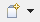
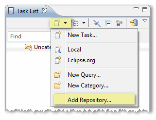
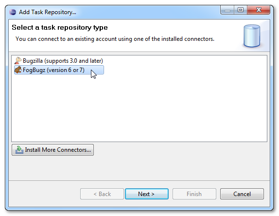
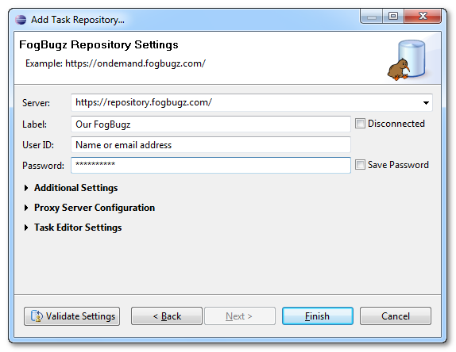
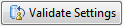
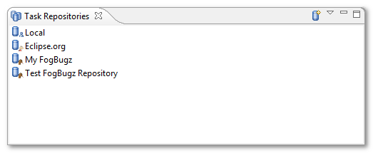

Adding new FogBugz repository
You can configure new FogBugz repository directly from the Task List view by clicking New Task button  and selecting Add Repository ... from the menu.

You can open Task List view by using Window > Show View > Other ... and selecting Tasks > Task List from the list of available views.
After using Add Repository ... command, dialog with known repository types will open.

Choose FogBugz, and go to Next step.
In following dialog, you need to specify:
- Server: this is the full address of your FogBugz repository, e.g.
http://example.fogbugz.com/ - Label: how will your repository be called in Eclipse
- User ID: your full name or email address
- Password: your password. You can choose to save your password to avoid typing it again (recommended).

If you want to use WikiText formatting for your comments, you can optionally configure your preferred Wiki syntax in Task Editor Settings section. Learn more about WikiText integration in Foglyn
Use  button to check if your new repository is configured correctly. Validate Settings will contact FogBugz server and use supplied User ID and Password to log-in. When validation succeeds, press Finish button.
List of configured repositories is available in Task Repository view, which can be accessed by Window > Show View > Other and selecting Tasks > Task Repositories. It is possible to add, modify or remove repositories in this view.

After configuring new repository, you need to configure one or more queries.
Related Topics: